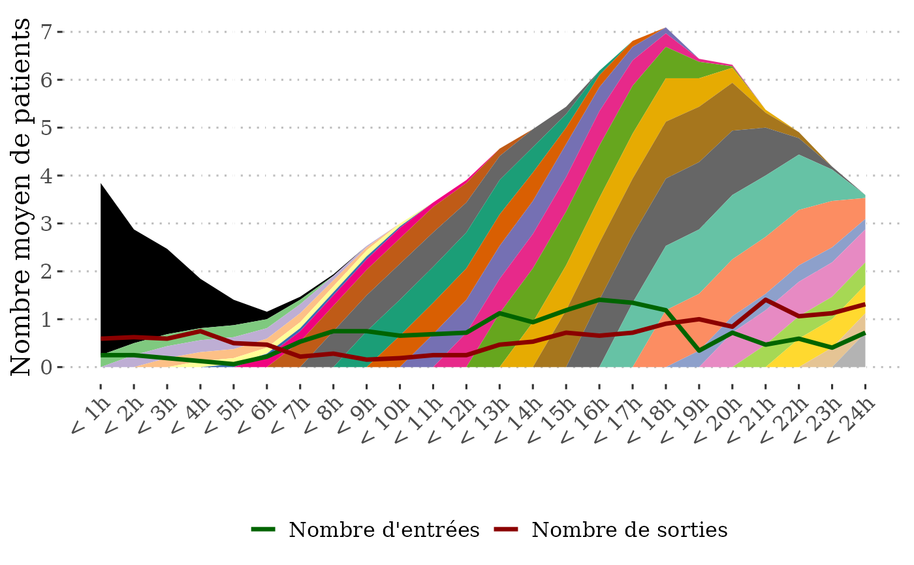
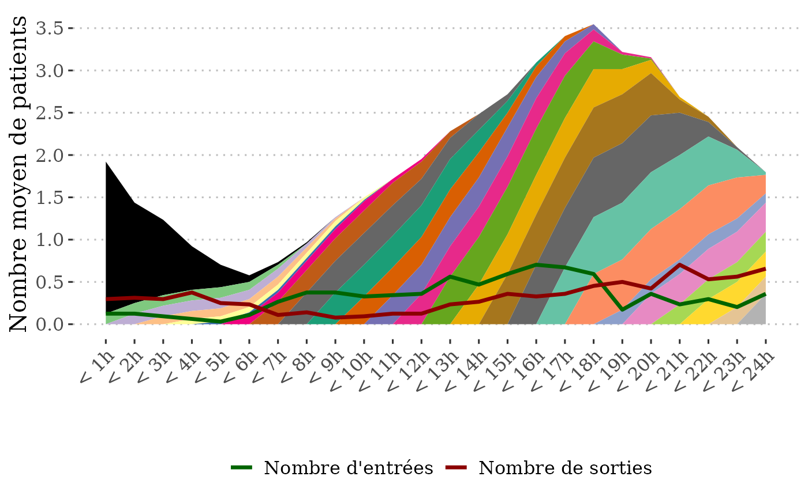

Plot a charge diagram
plot_diag_charge.RdPlot a charge diagram from a table with an entre datetime and exit datetime. A charge diagram shows the number of individuals and their time of arrival for each hour/half hour of a day.
Arguments
- data
A data frame or tibble.
- entry
The name of the column containing the datetime of entry. The colmum must be of class POSIXct or character in the format DD/MM/YYYY HH:MM:SS.
- exit
The name of the column containing the datetime of exit. The colmum must be of class POSIXct or character in the format DD/MM/YYYY HH:MM:SS.
- strata
The name of the colum(s) containing statas (e.g. structures) to average the charge over.
- from
The start of the time frame to consider (dmy). Number of patients will be averaged over the number of days between "from" and "to" and entry date/times will be truncated at "from". Default value is the minimum date in the entry column.
- to
The end of the time frame to consider (dmy). Number of patients will be averaged over the number of days between "from" and "to" and exit date/times will be truncated at "to". Default value is the maximum date in the exit column.
- max_LOS
Maximum length of stay for patients in minutes. Patients with durations longer than max_LOS will be considered as having missing length of stay.
Value
A list. tab contains the table used to make the charge diagram. H_entry = "-1" for patients entered the day before. plot contains the charge diagram.
Examples
library(rUrgAra)
#Table of entry/exit times
head(df_ex_charge)
#> # A tibble: 6 × 3
#> ENTREE SORTIE Etablissement
#> <dttm> <dttm> <chr>
#> 1 2022-01-16 16:14:00 2022-01-16 22:24:41 A
#> 2 2022-01-04 16:12:00 2022-01-04 23:38:01 A
#> 3 2022-01-12 14:18:00 2022-01-12 20:20:26 A
#> 4 2022-01-24 08:25:00 2022-01-24 16:27:53 A
#> 5 2022-01-03 19:08:00 2022-01-04 01:05:40 A
#> 6 2022-01-31 16:09:00 2022-01-31 22:54:14 A
#Charge diagram with exclusion of patients staying more than 3 days (72*60 = 4320 minutes)
# not taking into account strata
list_charge = plot_diag_charge(data = df_ex_charge, entry = "ENTREE",
exit = "SORTIE", max_LOS = 72*60)
#plot_diag_charge return two objects, a table showing for each hour of
# the day how many patient came from what hour (-1 = day before)
head(list_charge$tab)
#> # A tibble: 6 × 6
#> H_entry Hour n n_strata n_days n_avg
#> <dbl> <dbl> <int> <dbl> <dbl> <dbl>
#> 1 -1 1 115 1 32 3.59
#> 2 -1 2 76 1 32 2.38
#> 3 -1 3 57 1 32 1.78
#> 4 -1 4 33 1 32 1.03
#> 5 -1 5 17 1 32 0.531
#> 6 -1 6 5 1 32 0.156
#a charge diagram
list_charge$plot

#adding a strata to take into account that data are coming from two hospitals
list_charge_stratified = plot_diag_charge(data = df_ex_charge, entry = "ENTREE",
exit = "SORTIE", strata = "Etablissement",
max_LOS = 72*60)
#plot_diag_charge return two objects, a table showing for each hour of
# the day how many patient came from what hour (-1 = day before)
head(list_charge_stratified$tab)
#> # A tibble: 6 × 6
#> H_entry Hour n n_strata n_days n_avg
#> <dbl> <dbl> <int> <int> <dbl> <dbl>
#> 1 -1 1 115 2 32 1.80
#> 2 -1 2 76 2 32 1.19
#> 3 -1 3 57 2 32 0.891
#> 4 -1 4 33 2 32 0.516
#> 5 -1 5 17 2 32 0.266
#> 6 -1 6 5 2 32 0.0781
#a charge diagram
list_charge_stratified$plot
